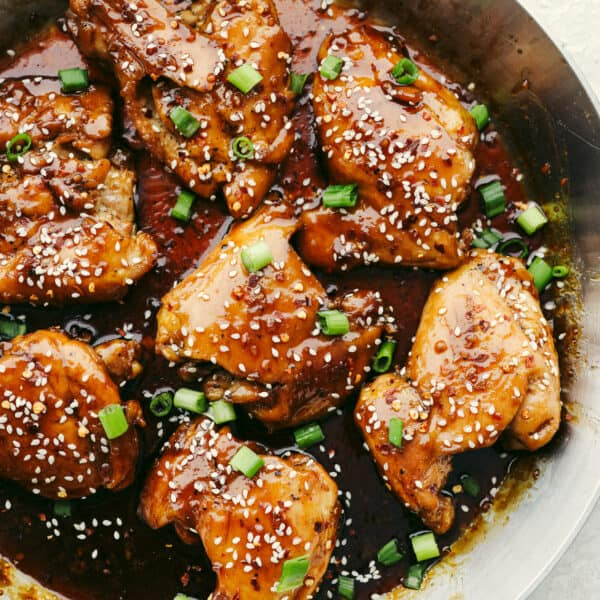

Sticky Glazed Chicken

Home
Sweet pan fried chicken thighs with sticky suace.
This sweet and savory chicken is delicious and easy to make! Be sure to get a good sear and fully coat these delightful chicken thighs. And garnish with fresh spring onions! Serve with white rice and veggies for a balanced meal.
Ingredients
- 1 pound skin on chicken thighs
- 1 tbs olive oil
- 3/4 cup brown sugar
- 1/3 cup soy sauce
- 2 tbs hoisin sauce
- 1 tbs sweet chili sauce
- 1 tbs ginger peeled and grated
- Pinch of dried red pepper
- 1/2 tsp minced garlic
- Juice of 1 lime
Directions
- Heat a large skillet over medium high heat and add 1 Tbs of olive oil. Add the chicken and salt and pepper. Cook chicken about 3 minutes on each side or until thermometer reads 165 degrees and brown on each side. Set chicken aside on plate.
- n the skillet whisk together brown sugar, soy sauce, hoisin sauce, sweet chili sauce, ginger, red pepper flakes, garlic and lime juice. Bring to a boil over medium heat for 1-2 minutes until sauce thickens.
- Add chicken back to the sauce and coat each side with the sauce. Garnish with sesame seeds and chopped green onions.